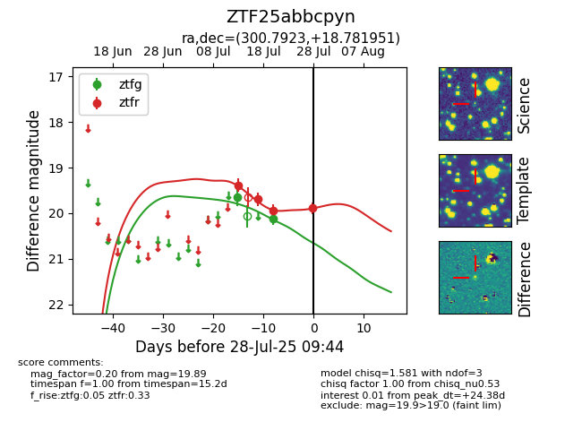

Target ZTF25abbcpyn at 2025-07-28 09:44, see:
FINK: fink-portal.org/ZTF25abbcpyn
Lasair: lasair-ztf.lsst.ac.uk/objects/ZTF25abbcpyn
ALeRCE: alerce.online/object/ZTF25abbcpyn
alt names
ZTF25abbcpyn (ztf,fink)
coordinates:
equatorial (ra, dec) = (300.7923,+18.78195)
galactic (l, b) = (57.9027,-6.46667)
photometry
last ztfg=20.11, ztfr=19.89
2 ztfg, 4 ztfr detections
